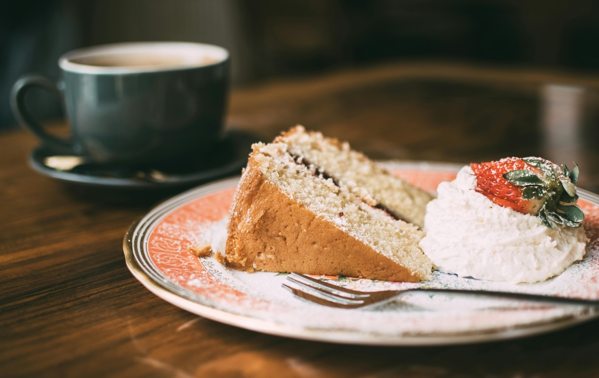
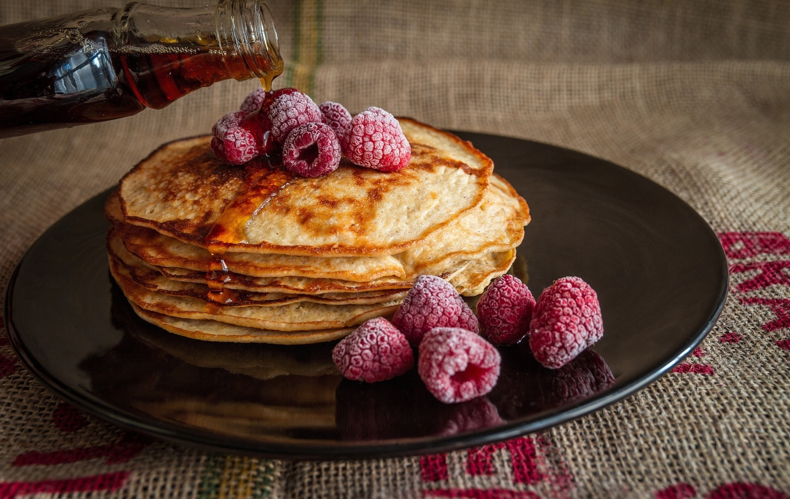
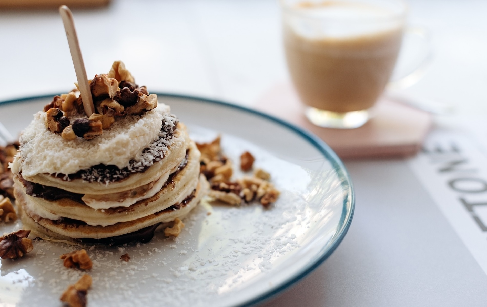
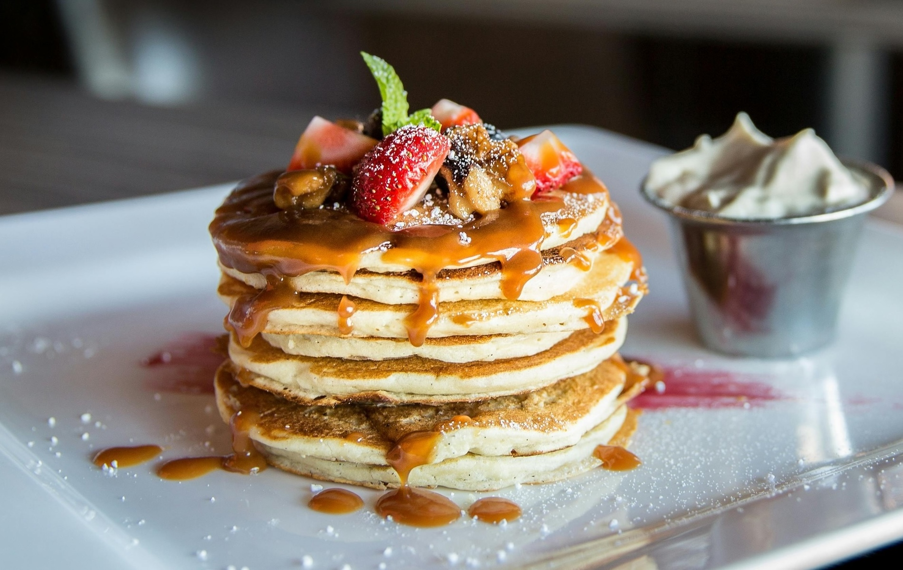
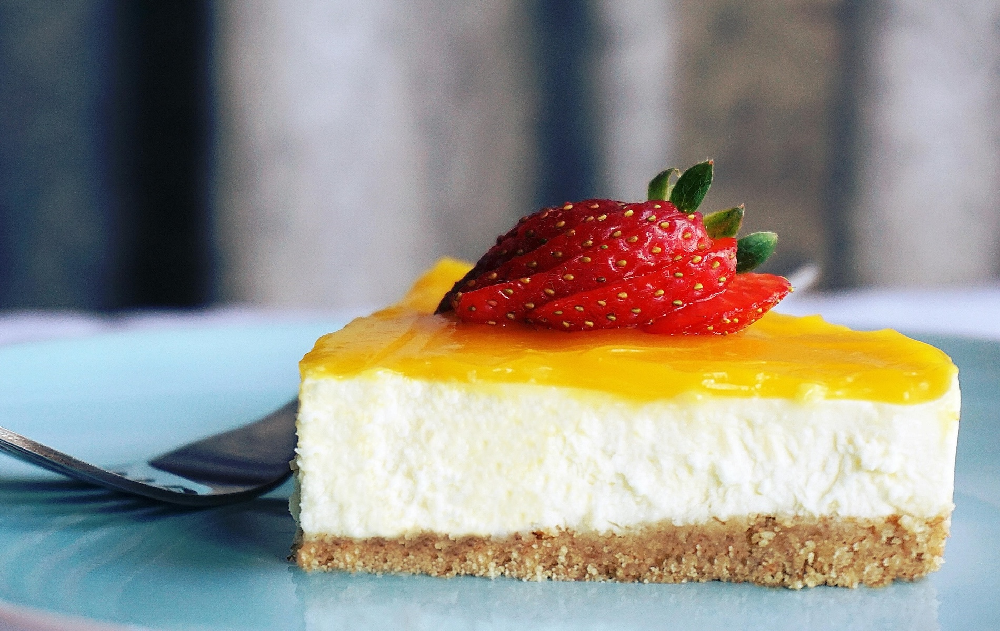

メインビジュアルを切り替え
右側のボタンで最前面のカードを送り、次の写真を前に出します。`animate()` と CSS Transition の挙動を見比べられる構成です。





写真を重ねて見せる UI を、実用的なカードレイアウトと操作説明つきで整理しています。2 種類のアニメーションの違いも比較できます。
右側のボタンで最前面のカードを送り、次の写真を前に出します。`animate()` と CSS Transition の挙動を見比べられる構成です。




